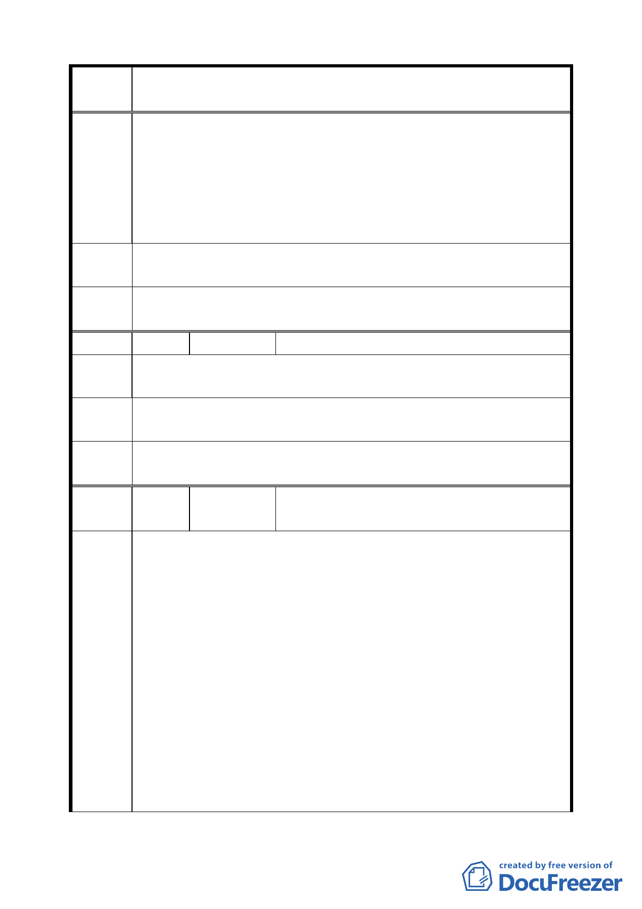

變更臺北市信義區信義段三小段五三之三四地號人行步道用地為
案 名 道路用地計畫案
斷，因為此巷道口的既成大樓擋到雙向的視線，不符合路口兩邊
15 公尺內不得停車（設置停車格位或任何阻礙視線之障礙物）
3.目前已有公車違規走南段的松勇路（工程砂石車、拖車亦然），
造成行人、腳踏車騎士極大的危險，若此巷道改成車道，後果不
堪設想。
4.為車行方便，造成行人腳踏車不便，更危及生命安全，殊不可行。
建 議 辦 反對變更為道路計畫用地
法
委員會
決議
同編號 1。
編號
5 陳情人
洪純琄
陳 情 理 主要因素考慮街道太小，博愛國小學童眾多，作行人步道較安全，
由 更應該封起來，禁止摩托車通過和汽車，以便附近居民散步使用。
建議辦
法 不希望作任何變更。
委員會
決議
同編號 1。
編號
6 陳情人
黄議員幼中、吳水上里長、張金庭、鐘小燕、
吳瓊珍
1.隨著北二高信義支線的開通，本計畫案所變更的道路無庸置疑的
會成為想要閃躲車流之駕駛的捷徑，而緊鄰在旁的博愛國小與興
雅國中兩校將近五千位學生上下學的安全將在人行步道變更為
道路用地後受到嚴重影響。同時該二校大部分老師對於道路將作
如此的變更一無所悉，更遑論直接受到影響的學生以及家長。為
陳情理
了替駕駛人節省兩三分鐘的紅燈等待時間賠上如此廣大的民眾
的人身安全。
由 2.松勇路 47 號之建築竣工已久，建物之門口即為人行步道，已無
退縮空間，若改為道路用地當地住戶一開門即是車道對居民及車
主而言皆相當危險，若因建物無法退縮之故而使道路寬度不一，
而致使發生之行車事故，責任反將由無辜民眾承擔。
3.信義計畫區規劃之初衷本為效法日本新宿，以行人徒步區替代車
道以建構岀一個安全無障礙的行走空間，然目前為解決土地開發
7